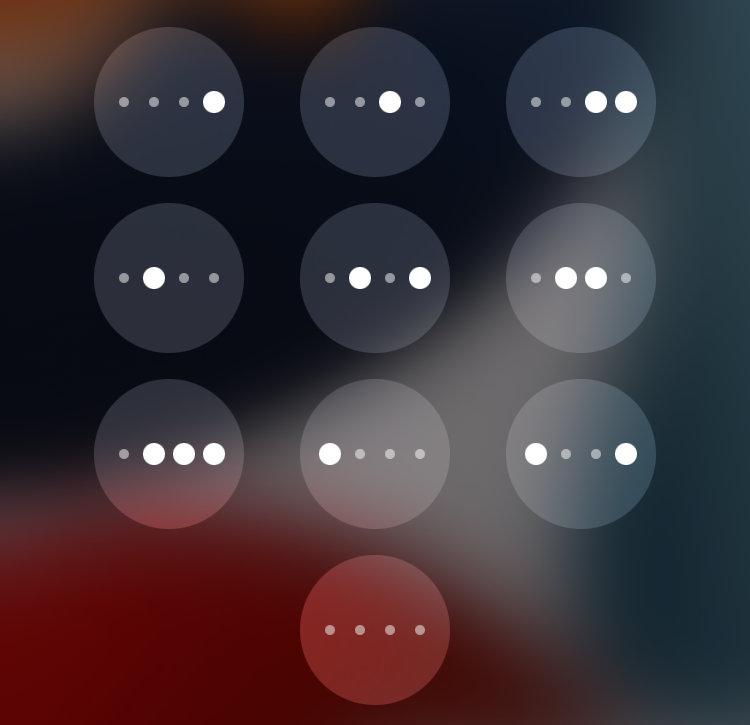

A binary passcode keypad: each Lock Screen passcode button shows its number as four dots instead of a digit.

Written from scratch by John d_ie, as a rootless port requested on r/jailbreak. Concept from the original BinaryPasscode by eskimo (Jordan Koch).